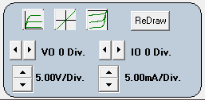

|  |
VO n Div. Moves the zero voltage location from the center of the plot. When n is negative, the zero moves n-divisions to the left. When n is positive, the zero moves n-divisions to the right. Integer n is -10 to +10. When in the X-t display mode, the voltage offset moves down and up. IO n Div. Moves the zero current location from the center of the plot. When n is negative, the zero moves n-divisions down. When n is positive, the zero moves n-divisions up. Integer n is -10 to +10. n V/Div. Clicking the spin button up increases the volts per division (more range) and clicking the spin button down decreases the volts per division (less range). Trace data is plotted per the selected value. Available values for n are: 10, 5, 2, 1, 0.5, 0.2, 0.1 0.05, 0.02 and 0.01V/Div. n mA/Div. Clicking the spin button up increases the mA per division (more range) and clicking the spin button down decreases the mA per division (less range). Trace data is plotted per the selected value. Available values for n are: 5, 2, 1, 0.5, 0.2, 0.1 0.05, 0.02, 0.01, 0.005, 0.002 and 0.001mA/Div. ReDraw Refreshes the plot display. The program does not auto update the display if it is written over by another application window. Use this button to refresh the display. Moves the zero point to the lower left corner. The same as VO -5 Div. and IO -5 Div. Moves the zero point to the center. The same as VO 0 Div. and IO 0 Div. Moves the zero point to the upper right corner. The same as VO 5 Div. and IO 5 Div. Main |